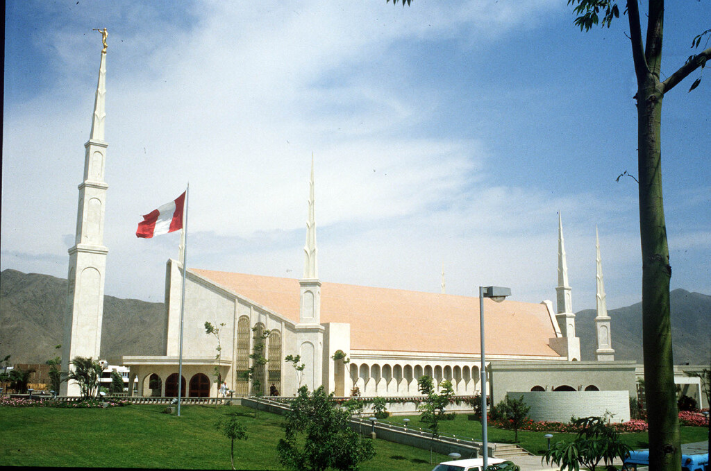
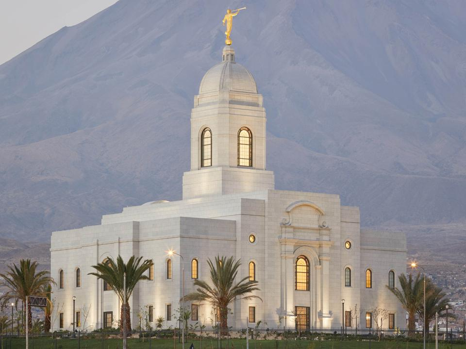
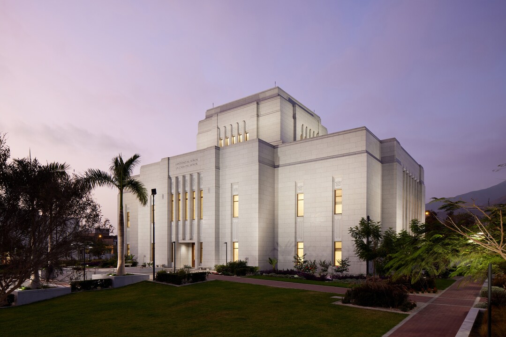
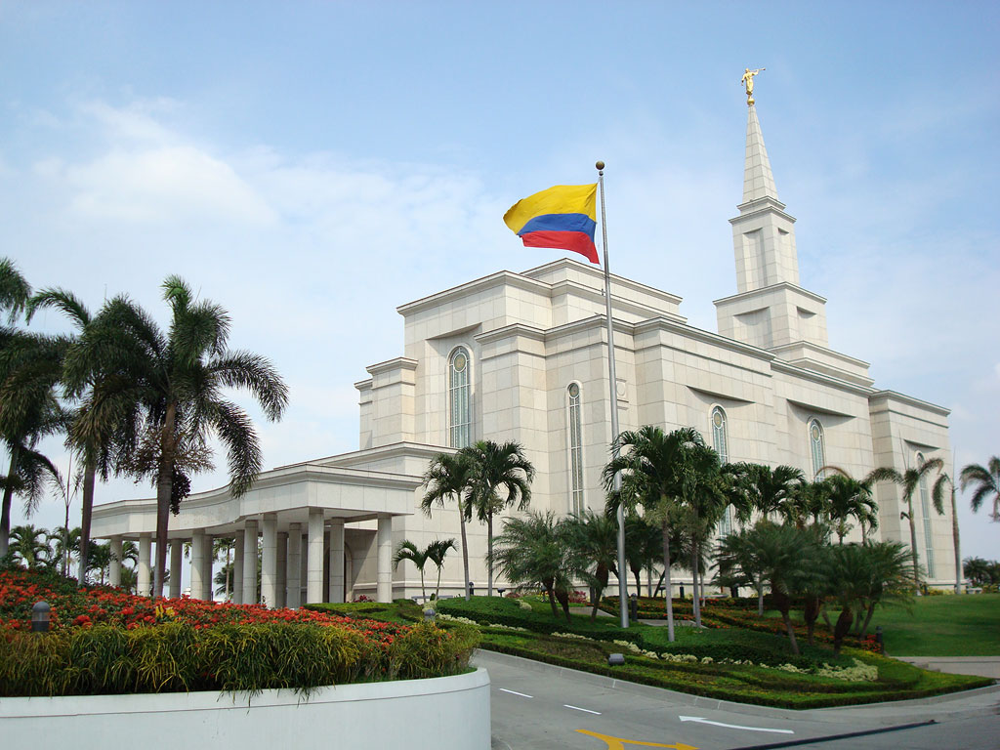
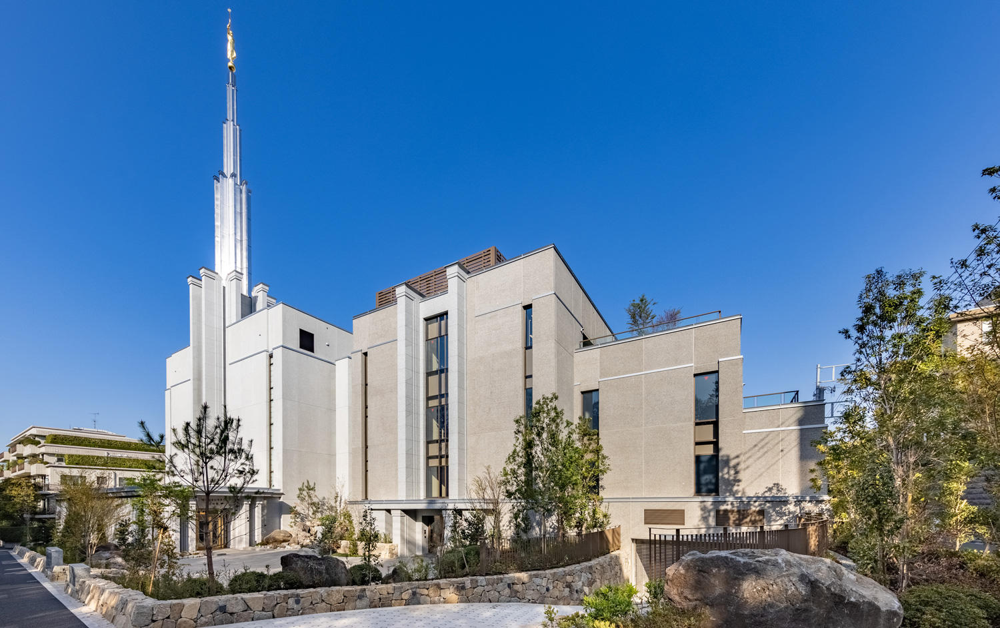
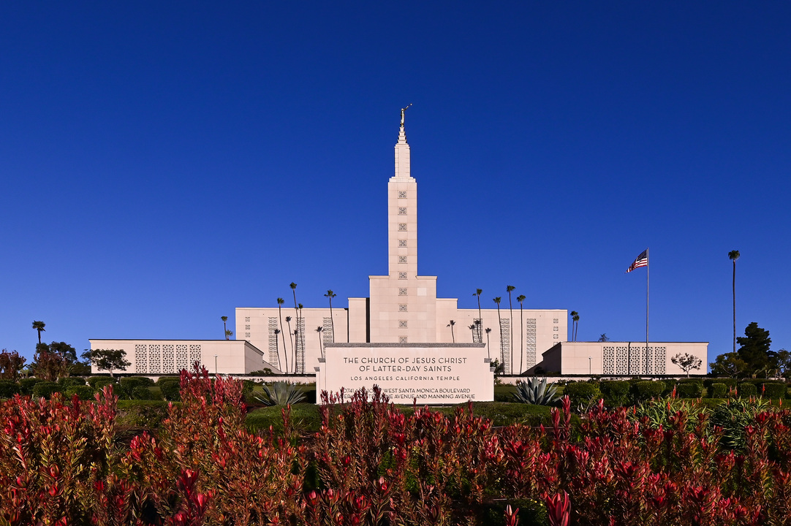

Temple Album
☰
Home
Old
New
Large
Small
A Gallery of Temples

Lima Peru Temple
Trujillo Peru Temple

Arequipa Peru Temple

Los Olivos Peru Temple

Guayaquil Ecuador Temple

Tokyo Japan Temple

Los Angeles California Temple
Rome Italy Temple
Salt Lake Temple